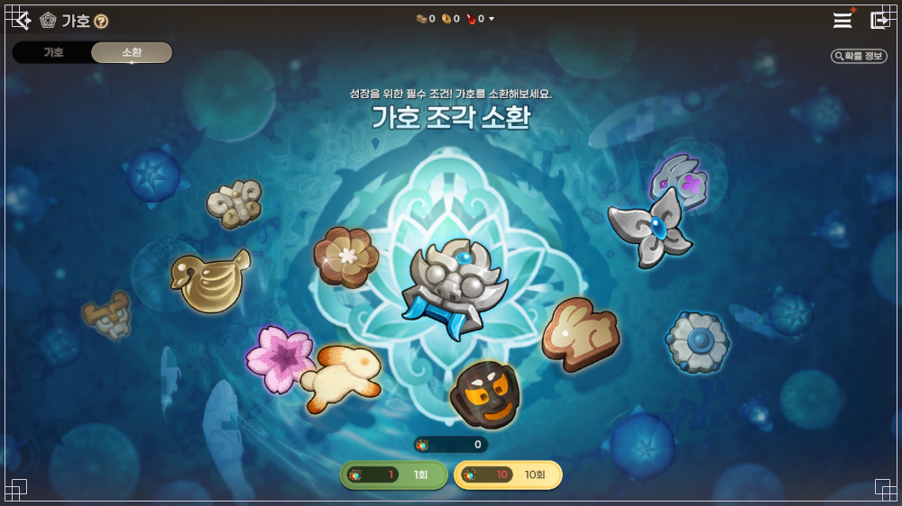
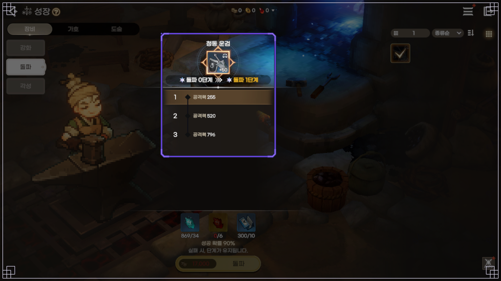

도깨비의세계 확률 보는법, 가호 소환·돌파 확률 공식 게시판 찾는 순서
도깨비의세계 확률은 공식 포럼의 '현재 확률 정보' 게시판에서 보고, 바뀌기 전 표는 '기존 확률 정보' 게시판에 따로 있어요. 가호 소환 확률과 돌파 확률도 그 안에 항목별 글로 들어 있답니다.
도깨비의세계 확률 보는법을 검색해 들어오신 분들은 숫자부터 찾고 싶으실 텐데요, 숫자는 점검 때마다 바뀔 수 있어서 이 글에는 싣지 않고, 어느 게시판의 어느 글을 어떤 순서로 열고 표에서 무엇을 확인하면 되는지만 정리했거든요. 10월 20일까지 확인한 공식 게시판 기준이고, 그 뒤에 바뀐 내용은 확인하지 못했어요.
도깨비의세계 확률 보는법, 게시판은 어디고 어떤 순서로 찾나요?
'현재 확률 정보' 게시판에서 입구 글을 열고, 그 안의 12항목 표에서 가호 소환과 돌파를 골라 [확률 보기]를 누르는 순서예요. 두 게시판의 차이부터 표로 볼게요.
| 게시판 | 담는 것 | 제목 표기 | 언제 보나 |
|---|---|---|---|
| 현재 확률 정보 | 지금 적용되는 표 | (26.10.08~)처럼 시작일 뒤에 물결 | 내가 쓰는 확률이 궁금할 때 |
| 기존 확률 정보 | 바뀌기 전 표 | (~26.10.10 점검 이전)처럼 물결이 앞 | 예전과 비교하고 싶을 때 |
입구는 '확률형 아이템 정보 공개 (26.10.15 09:00 기준)'라는 글이에요. 주소는 여기예요.
https://forum.kakaogames.com/dokkaebi/postView/?code=prob&id=9333
공식 문구가 '각 항목의 [확률 보기]를 선택하시면 상세한 확률 정보를 확인하실 수 있습니다'라서, 이 글이 12항목 목차 역할을 하고 행마다 오른쪽 [확률 보기]가 항목 글로 바로 이어져요.
12항목은 이름만 줄줄이 나열돼 있어서, 성격별로 묶어 두면 찾기 쉬워요. 이 묶음은 보기 편하게 나눈 거라 공식 분류는 아니에요.
- 성장 관련 : 돌파 - 장비, 가호, 도술 / 장비 등급별 추가 효과 부여 수 / 기운 발현 / 단 봉인해제 / 내면의 길 옵션
- 뽑기·상자 관련 : 가호 소환 확률 (가호 주머니) / 랜덤 상자 확률 (선택 상자 제외 랜덤 상자) / 영석 상점 - 의복 랜덤 열쇠 / 영석 상점 - 염색약 랜덤 상자
- 외형 관련 : 랜덤 염색약 / 의복 합성 / 탈것 합성
목차 표에서 '가호 소환 확률 (가호 주머니)'는 9번째, '돌파 - 장비, 가호, 도술 확률'은 4번째 행이에요. 돌파는 장비·가호·도술이 한 글에 모여 있어서 '가호 돌파'만 찾으면 헷갈리니 목차 이름 그대로 찾으시면 돼요. 항목 글 직링크는 이렇게 두 개예요.
가호 소환 : https://forum.kakaogames.com/dokkaebi/postView/?code=prob&id=9267
돌파 : https://forum.kakaogames.com/dokkaebi/postView/?code=prob&id=9300
가호 소환 확률표는 게임 안에서도 보이고, 거래 가능·거래 불가 두 열은 뭔가요?
가호 소환 화면 오른쪽 위에 '확률 정보' 버튼이 있고, 게시판 표의 거래 가능·거래 불가는 서로 다른 칸이라 둘을 다 합쳐야 합계가 맞아요. 소환에는 가호 주머니가 필요한데, 공식 문구로는 도사 수행록 누적 점수 보상과 각종 콘텐츠로 얻을 수 있다고 해요.

가호 소환 화면 오른쪽 위의 '확률 정보' 버튼이에요. 테스트 환경에서 만든 가이드 화면이라 숫자는 보지 마세요.
게시판의 가호 소환 표는 등급, 조각 수, 거래 불가 확률, 거래 가능 확률 네 열로 되어 있어요. 공식 원문이 '전체 확률의 합계(100%)는 거래 가능 확률과 거래 불가 확률을 모두 합산한 값입니다'라고 적어 두었으니, 한 등급 줄의 두 칸만 더해서는 합계가 안 나와요. 같은 표를 숫자까지 정리한 건 제 '가호 세트 효과 정리' 글에 있어서 여기서는 다시 옮기지 않았어요.
공식 설명을 찾지 못했어요. 인게임에서 확인해 보시면 좋아요.
돌파 확률표는 어떻게 읽고, 실패하면 단계가 떨어지나요?
돌파에 실패해도 단계는 떨어지지 않고, 재료만 쓰이면서 지금 단계가 그대로 유지돼요. 공식 문구도 '돌파 실패 시 단계가 하락하지 않으며, 시도에 소모된 재료만 차감되고 현재 단계는 안전하게 유지됩니다'라고 되어 있어요.
- 열 이름은 단계, 성공 확률, 실패(유지) 확률이고, 그냥 '실패'가 아니라 '(유지)'가 붙어 있어요.
- 행 이름은 '0 → 1'처럼 지금 단계에서 다음 단계로 가는 모양이에요.
- 장비·가호·도술은 +50까지 강화를 끝내야 돌파할 수 있어요. 자세한 건 성장 가이드에 있어요 : https://forum.kakaogames.com/dokkaebi/postView/?code=guide&id=7739

돌파 화면 아래쪽의 '실패 시, 단계가 유지됩니다' 문구만 봐 주세요. 테스트 환경 가이드 화면이라 숫자는 보지 마세요.
돌파 글은 장비 표, 가호 표, 도술 표 순서로 이어지고, 표 위의 제목 띠 그림에 '가호 - 돌파' 같은 이름과 등급이 적혀 있어요. 등급이 높을수록 표가 길어지는 구조입니다. 제 '무기 추천' 글에도 실패 시 단계 유지 이야기가 있는데, 표는 공식 게시판에서 직접 보시는 쪽이 가장 정확해요.
표 위의 '○일 기준으로 적용됩니다'는 무슨 뜻이고, 예전 확률은 어디서 봐요?
그 날짜는 해당 표가 적용되기 시작한 때로 읽혀요. 가호 소환과 돌파 글 첫 줄은 '본 확률 정보는 2026년 10월 8일(목) 기준으로 적용됩니다'인데요, 장비 추가 효과 글은 기존 쪽이 10월 14일(수) 10:30 기준, 새 글이 10월 15일(목) 09:00 기준이라서 그렇게 읽혀요. 아래 공지에 두 글이 같이 링크돼 있어요. 다만 공식이 직접 풀어 쓴 설명은 아니에요.
제목의 괄호 표기도 같이 보시면 좋아요.
| 제목 표기 | 예 | 뜻 |
|---|---|---|
| 날짜만 | (26.10.08~) | 그날부터 적용 |
| 날짜 + 시각 | (26.10.15 09:00~) | 그날 그 시각부터 적용 |
| 기존 확률 정보 쪽 | (~26.10.10 점검 이전) | 그 점검 전까지 적용 |
정정이 들어간 글은 본문에 '내용 수정' 같은 표시가 남아요. 제목에 [내용수정] 말머리가 붙는 글도 있고, 본문에만 표시된 글도 있어요.
예전 확률은 '기존 확률 정보' 게시판에 있고, 제가 확인한 10월 10일과 10월 15일에는 '점검 후 변경되는 확률 정보 안내' 공지가 올라왔어요. 공식 문구는 '변경된 확률 정보는 ‘현재 확률 정보’ 게시판에서 확인 가능하며, 변경 이전 확률 정보는 ‘기존 확률 정보’ 게시판에서 확인 가능한 점 참고 부탁드립니다'예요. 10월 15일 공지에는 변경 이유가 한 줄 적혀 있고 기존 글과 변경 글 직링크가 같이 붙어 있어요.
10월 15일 공지 : https://forum.kakaogames.com/dokkaebi/postView/?code=notice&id=20562
기존 글 예시 : https://forum.kakaogames.com/dokkaebi/postView/?code=past_prob&id=20558
'기존 확률 정보'에는 가호 소환과 돌파 글이 없었어요. 그 뒤에 바뀐 게 있는지는 공지에서 직접 확인해 보세요. 10월 21일에 같은 이름으로 보이는 공지가 하나 더 올라왔는데, 내용은 확인하지 못했어요.
10월 21일 공지 : https://forum.kakaogames.com/dokkaebi/postView/?code=notice&id=539215
도깨비의세계 확률 자주 묻는 질문
Q. 표 합계가 딱 맞지 않는 경우도 있나요?
목차 글에 일부 비율은 소수점 반올림 기준이라 전체 합계가 딱 맞지 않을 수 있다고 적혀 있어요. 그래서 직접 합쳐 봤을 때 살짝 어긋나 보여도 이상한 게 아닐 수 있어요.
Q. 가호 소환에 천장이 있나요?
소환 확률 글에는 천장 관련 문구가 적혀 있지 않았어요. 있다 없다를 단정할 근거가 없으니 인게임에서 확인해 보시는 게 좋아요.
Q. 가이드 화면의 숫자를 믿어도 되나요?
가이드 화면은 테스트 환경에서 만들었다고 안내되어 있어요. 숫자는 게시판 표를 기준으로 보세요.
Q. 왜 확률을 공개하나요?
목차 글에 '관련 법령에 따라 확률형 아이템 정보를 안내해 드립니다'라고 적혀 있어요.
도깨비의세계 확률 보는법 정리
확률 게시판을 열기 전에 메모해 둘 만한 세 줄이에요.
- 표 첫 줄과 제목의 날짜가 내가 보려는 시점이 맞는지 먼저 봐요.
- 가호 소환이면 거래 가능·거래 불가 두 열, 돌파면 실패(유지) 열을 눈여겨봐요.
- 가호 소환 합계는 두 열을 모두 합친 값이 기준이에요.
저라면 점검이 있었다 싶은 날에는 숫자부터 보지 않고 '점검 후 변경되는 확률 정보 안내' 공지를 먼저 열 것 같아요. 어느 항목이 바뀌었는지부터 알면 표를 훨씬 덜 헤매거든요. 이 글은 10월 20일까지 확인한 공식 게시판 기준이니 지금 표는 게시판에서 직접 보시고 즐겁게 키워 보세요.
✔ 도깨비의세계 같이 보기 좋은 내용
· 도깨비의세계 강화서 획득방법, 비경·필드 보스·상인회 어디서 나오나
· 도깨비의세계 화첩 조각 얻는 법 4가지, 거래소는 안 돼요
· 도깨비의세계 순위 뒤집힌 도술 조합 추천, 사냥 인기 4유형·PvP 현황 10월 21일 개편 후 10월 22일 기준
참고한 곳
· 확률형 아이템 정보 공개 (현재 확률 정보 9333)
· 가호 소환 확률 (현재 확률 정보 9267)
· 돌파 확률 - 장비, 가호, 도술 (현재 확률 정보 9300)